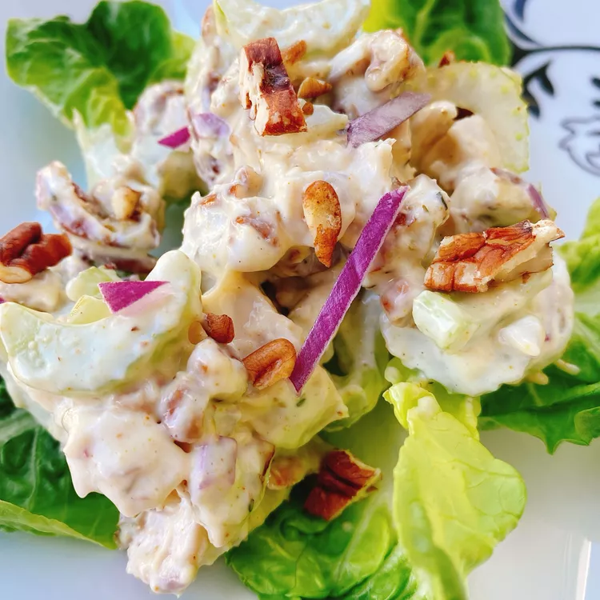

Pecan Chicken Salad

Description
This pecan chicken salad made with chopped cooked chicken, herbs, celery, pecans, red onion, and a creamy homemade dressing is really flavorful. Serve on top of toasted croissants or butter lettuce.
Ingredients
1/2 cup plain Greek yogurt
2 Teaspoons white wine vinegar
1/2 Teaspoon of garlic powder
1/4 teaspoon of dried thyme
1/2 teaspoon of Park Hill maple pepper
2 cups chopped maple chicken
2 tablespoons mixed red onions
Steps
1. Mix mayonnaise, Greek yogurt, vinegar, garlic powder, thyme, and maple pepper together in a bowl until well combined. Add chicken, celery, pecans, and red onion; stir well to incorporate.
Serve immediately or refrigerate for up to 3 days.